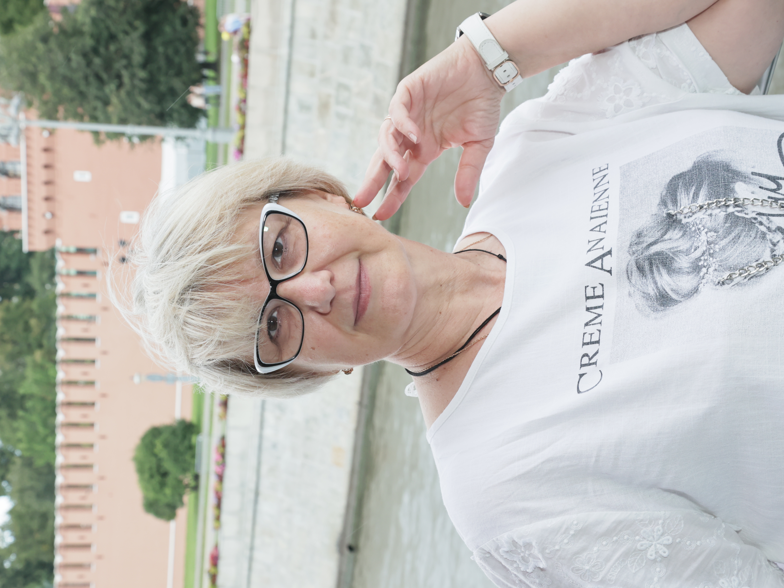

Елена Савина родилась в поселке Старый Город в Мордовии, где в последующем проводила каждое лето у любимой бабушки. Школу закончила в Туркменистане, г. Чарджоу. Окончила техникум в г. Пушкино по профессии инженер связи. Родила и вырастила вместе с супругом дочь и сына в поселке Погорелое Городище, Тверской области.
Проработала в компании Ростелеком до 2015 года. В 2016 году начала заниматься плетением корзин из бумажной лозы, а в 2023 году наткнулась на курс по тортам — и этот поезд было уже не остановить. За тортами последовал зефир, затем макарунсы, и останавливаться я не планирую.
В школе нас учили готовить и печь, а сегодня я прохожу новые курсы, на которых я осваиваю навыки работы с материалами, о существовании которых я раньше и не подозревала.
Сейчас я готовлю торты, зефир, печенье с зефиром и нежные макарунсы на натуральных ягодах, которые в большинстве своем, выращиваю тоже сама.
Моя мастерская находится все так же в Тверской области, в поселке Погорелое Городище. Здесь тихо, чистый воздух и нет спешки — идеальные условия для создания нежного зефира и нежнейших макарунсов. Раз в две недели я приезжаю в Москву, чтобы передать вам свежие десерты, или отправляю их с надежной доставкой